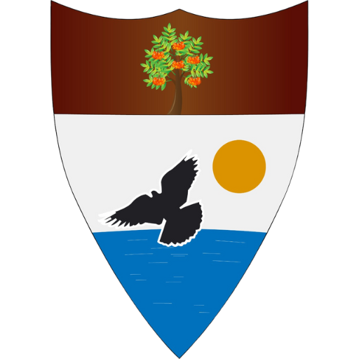

🎓
ProgrammeArtificial Intelligence
A career-focused digital learning pathway.

LIBERLAND UNIVERSITYDigital Design SystemLDDS · Version 1.0
Reusable experience components for the Liberland Digital Campus, designed for clarity, accessibility and confident progression.
Every component should make the user’s next best step clear without exposing the complexity behind the platform.
Foundation
Actions
Content
A career-focused digital learning pathway.
Collaborative research with practical impact.
Meet peers, mentors and future collaborators.
Signature experience
Feedback and progress
“Which programme best matches my goal?”